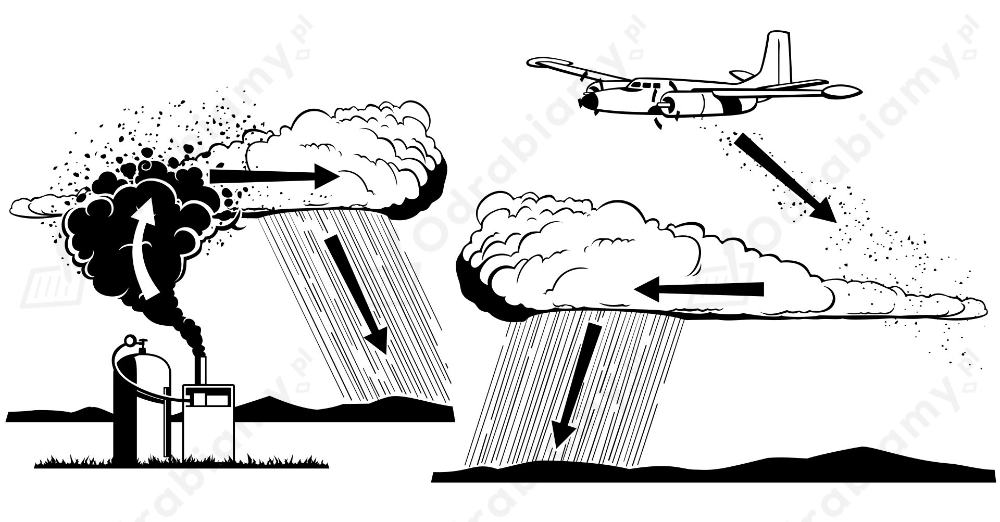

Naturalnym sposobem naszego organizmu na ochładzanie się jest pocenie się. Pot (głownie woda) paruje z powierzchni naszej skóry odbierając ciepło z organizmu i ochładzając go.
Parowanie potu będzie mniej efektywne w środowisku wilgotnym, niż w środowisku suchym o tej samej temperaturze. Dlatego czujemy się gorzej, kiedy jest gorąco i wilgotno, bo nasz organizm nie chłodzi się tak efektywnie.
Zasiewanie chmur jest próbą mechanicznego wpływania na pogodę występującą na danym obszarze terenu. Operacja ta ma służyć zwiększeniu ilości opadów deszczu lub śniegu na danym terenie, co ma pozwalać na zapobieganie suszy. Pojawiają się również obawy o militarne zastosowanie takiej możliwej kontroli nad pogodą. Skuteczność zasiewania chmur nie została jednak jeszcze dobrze zbadana i nie jesteśmy wstanie dobrze oszacować efektywności tego działania.
Ideą zasiewania chmur jest rozproszenie w powietrzu jąder kondensacji lub zarodków krystalizacji (specjalnie dobrane cząsteczki wprowadzane sztucznie na pewien obszar), powodując tym samym zmiany w procesie formowania się chmur i wpływając na końcowy efekt opadów. Najczęściej do zasiewania chmur stosuje się jodek srebra lub suchy lód.
Schematyczne przedstawienie zasiewania chmur:

Źródło:
pl.wikipedia.org/wiki/Zasiewanie_chmur
Przelewając herbatę z kubka do kubka zwiększamy powierzchnię na jakiej ona paruje oraz powodujemy mieszanie się objętości herbaty o różnych temperaturach co pozwala jej na efektywniejsze stygnięcie. Dodatkowo kubki podczas kontaktu z gorącą herbatą odbierają od niej ciepło samemu się ogrzewając.
Para wodna będzie mieć zawsze temperaturę większą lub równą temperaturze wrzenia wody. Wiemy, że temperatura wrzenia wody zależy od ciśnienia zewnętrznego. Im niższe ciśnienie tym niższa temperatura wrzenia. Na Ziemi, gdzie panuje ciśnienie ok 1000 hPa woda wrze w temperaturze 100°C. Jeżeli ciśnienie spadnie odpowiednio nisko - prawie do zera (stan próżni), to temperatura wrzenia wody może wynosić 1°C jak i -1°C. Zatem istnieją warunki, w których para wodna może mieć temperaturę 1°C lub -1°C.
W obu przypadkach podgrzewamy wodę o 10°C. Woda paruje w każdej temperaturze, ale intensywność jej parowania rośnie wraz ze wzrostem temperatury wody (najintensywniejsze parowanie występuje w temperaturze wrzenia).
Zatem woda będzie intensywniej parowała podczas podgrzewania między 80°C-90°C, niż między 20°C-30°C. Parująca woda, będzie odbierała spore ilości ciepła z wody, przez co jej podgrzewanie będzie wydłużone. Zatem dłużej będzie trwało podgrzewanie wody od 80°C do 90°C.
Dane:
Ciepło topnienia wody wynosi:
Szukane:
Rozwiązanie:
Energię potrzebną do stopienia lodu w temperaturze topnienia (0°C) wyznaczymy jako:
Do stopienia tej masy lodu potrzeba 6,68 kJ energii.
Dane:
Ciepło topnienia wody wynosi:
Rozwiązanie:
a)
Jeżeli temperatura wody i lodu jest jednakowa to musi ona być równa temperaturze topnienia 0°C - temperatura wspólna dla wody w stanie stałym jaki i ciekłym.
b)
Energię elektryczną jaką czajnik elektryczny pobierze i zamieni na ciepło w czasie swojej pracy wyrazimy jako:
Energię jaką potrzeba dostarczyć do lodu w celu jego stopienia wyznaczymy jako:
Zatem:
Wyznaczmy czas na jaki trzeba włączyć czajnik.
Czajnik trzeba włączyć na niecałe 28 sekund, aby lód stopniał.
Dane:
Ciepło właściwe wody wynosi:
Ciepło parowania wody wynosi:
Szukane:
Rozwiązanie:
Wyznaczmy jaka ilość energii została dostarczona do wody w trakcie jej podgrzewania:
Moc palnika będzie równa:
Energię potrzebną do odparowania całej objętości wody wyrazimy jako:
Energię dostarczoną przez palnik w celu odparowania wody wyrazimy jako:
Zatem:
Wyznaczmy czas potrzebny do odparowania wody:
Wrzenie, zanim cała woda wyparuje, będzie trwało około 67 minut.
Dane:
Ciepło właściwe wody wynosi:
Ciepło topnienia wody wynosi:
a)
Szukane:
Rozwiązanie:
Woda w wyższej temperaturze będzie ochładzać się do temperatury końcowej i oddawać ciepło, a woda o niższej temperaturze będzie pobierając ciepło ogrzewać się do temperatury końcowej. Zapiszmy równanie bilansu cieplnego:
Obliczmy masę wlanej wody.
b)
Szukane:
Rozwiązanie:
Wrzucając kostki lodu do wody będą one pobierać ciepło topiąc się i następnie ogrzewając do temperatury końcowej. Woda ciepła będzie ochładzała się do temperatury końcowej oddając ciepło. Zapiszmy równanie bilansu cieplnego:
Wyznaczmy masę lodu :
c)
Wyznaczmy stosunek masy wody do masy lodu :
Żeby osiągnąć ten sam efekt należało wlać 9 razy więcej zimnej wody niż lodu. Wynika to z dużej wartości ciepła topnienia lodu.
Dane:
Ciepło właściwe wody wynosi:
Ciepło parowania wody wynosi:
Szukane:
Rozwiązanie:
Ciepło oddane przez skraplającą się parę wodną musi wystarczyć do podgrzania wody do temperatury
100°C. Zapiszmy równanie bilansu cieplnego:
Wyznaczmy masę pary wodnej:
Do tej wody należy wdmuchnąć 30 g pary wodnej.
Odczytujemy z tabeli wartości energetycznej wybranych produktów potrzebne dane.
Wartość energetyczna jasnego chleba:
Przybliżona masa kromki chleba:
Wartość energetyczna masła:
Przybliżona masa masła zużywana do posmarowania kromki:
Obliczmy energię jaką dostarczamy po zjedzeniu kromki chleba z masłem.
Skorzystamy z zależności:
Zjedzenie kromki chleba z masłem dostarcza ponad 600 tys. dżuli energii.
Dane:
Wartość energetyczna czekolady:
Skorzystamy z zależności:
Szukane:
Rozwiązanie:
Obliczmy jaką energię dostarcza zjedzenie tabliczki czekolady:
Energię kinetyczną wyrażamy jako:
Za masę przyjmujemy sumę mas osoby i roweru:
Zakładamy, że cała energia dostarczona po zjedzeniu czekolady może zostać zamieniona na energię kinetyczną.
Wyznaczmy prędkość do jakiej można by się rozpędzić: